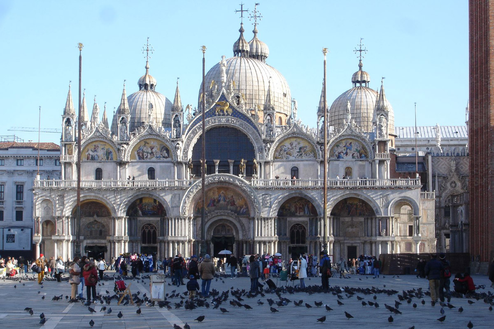

Architecture
In Venice St.Mark's Basilica is made after the previous church, Church of the Holy Apostles. Venetian church is based on Greek design and Byzantine decoration. From an artistic viewpoint in the church are important mosaics, to be able to see them, tourists should come through the main entrance. The mosaics are placed on the wall and the visitors are not allowed to touch them. Venetian culture had also some Islamic influence, the stone or marble was used the first time in Gothic period, to show the meaning of central windows. When tourists first entered St.Mark's basilica they were more interested and inspired with people who wore dresses and masks from the past. They wave and smile from the terrace and invite people to join them.
